📋 第一步：理解题目
题目：在Rt△ABC中，∠C = 90°，∠A ≠ 30°，∠A ≠ 45°。在直线BC或AC上取一点P，使得△PAB是等腰三角形，则符合条件的点P有多少个？
关键条件：
- 直角三角形ABC，C为直角顶点
- P在直线BC或直线AC上（包括延长线！）
- △PAB是等腰三角形（PA、PB、AB中有两边相等）
- ∠A ≠ 30° 且 ∠A ≠ 45°（排除特殊退化情况）
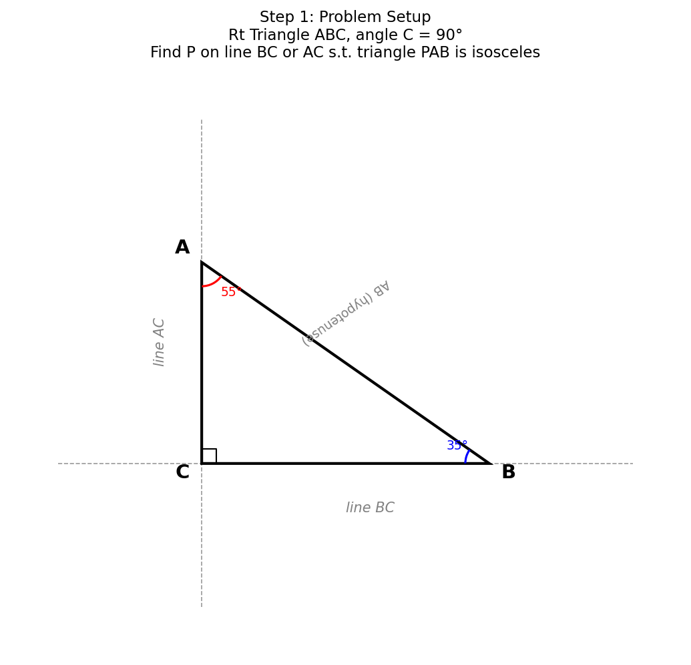
✓ 关键词是"直线"——P不仅可以在线段BC或AC上，还可以在它们的延长线上！这大大增加了可能的点数。
? 思考方向：△PAB有三条边 PA、PB、AB。等腰意味着其中两条相等。按"哪两条相等"分三类讨论。
✗ 常见错误：只在线段BC和AC上找P，忘记延长线上的点。"直线"和"线段"是不同的！
📐 第二步：确定分类方法
△PAB为等腰三角形有三种情况（按"顶点"分类）：
情况①：PA = PB（P是等腰三角形的顶点）
几何含义：P到A和B的距离相等 → P在AB的垂直平分线上
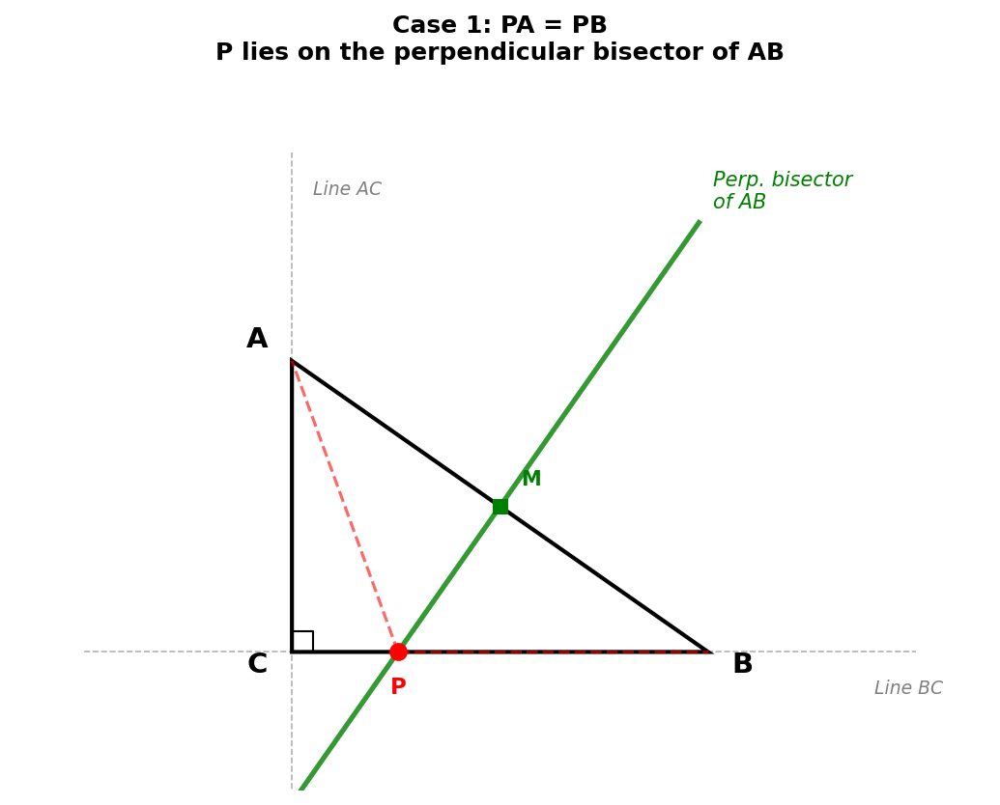
情况②：PA = AB（A是等腰三角形的顶点）
几何含义：P到A的距离等于AB → P在以A为圆心、AB为半径的圆上
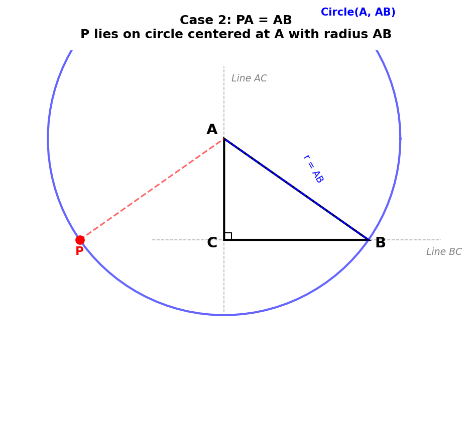
情况③：PB = AB（B是等腰三角形的顶点）
几何含义：P到B的距离等于AB → P在以B为圆心、AB为半径的圆上
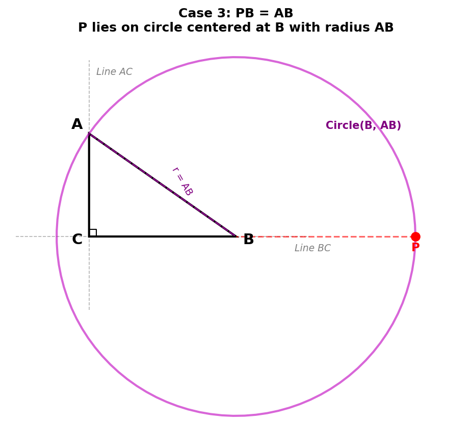
对每条直线（BC和AC），分别讨论这三种情况，看各自有多少个交点。
总策略：2条直线 × 3种等腰情况 = 6个子问题
✓ 这道题的核心方法："直线与圆（或直线与直线）的交点个数"。会画图就能数出来！
? 对于"圆与直线的交点"：圆心到直线的距离 vs 半径决定了交点个数（0、1、2个）。
✗ 注意：找到交点后，要排除使△PAB退化的点（即P=A或P=B时不构成三角形）。
🔍 第三步：P在直线BC上
① PA = PB（P在AB的垂直平分线上）
AB的垂直平分线是一条确定的直线。它与直线BC不平行（因为垂直平分线经过AB中点，方向垂直于AB），所以恰好有1个交点。
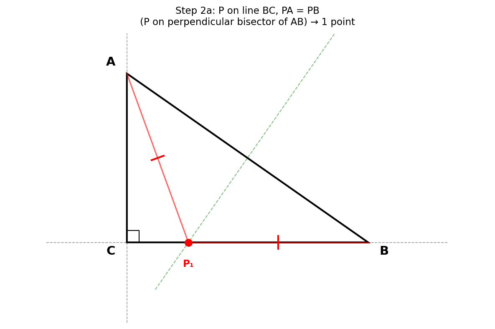
→ 1个点
② PA = AB（A为圆心，AB为半径的圆）
圆过B点（因为AB=半径）。直线BC经过B，且A到直线BC的距离=AC < AB（直角三角形中斜边最长），所以圆与直线BC有两个交点。
其中一个交点是B本身（排除），另一个是有效的P。
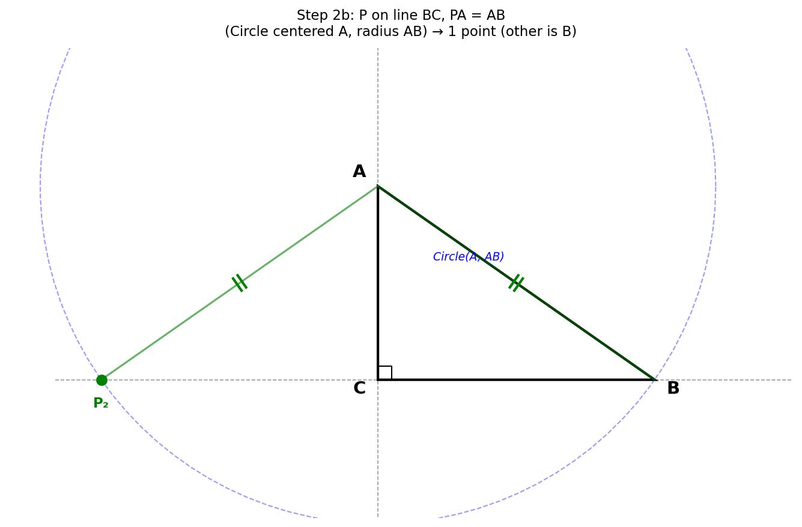
→ 1个点（扣除B点）
③ PB = AB（B为圆心，AB为半径的圆）
圆心B在直线BC上，所以直线BC是经过圆心的直线（即直径所在的直线），与圆有两个交点。
这两个交点都不是A（A不在直线BC上），都不是B（距B等于AB≠0），都有效。
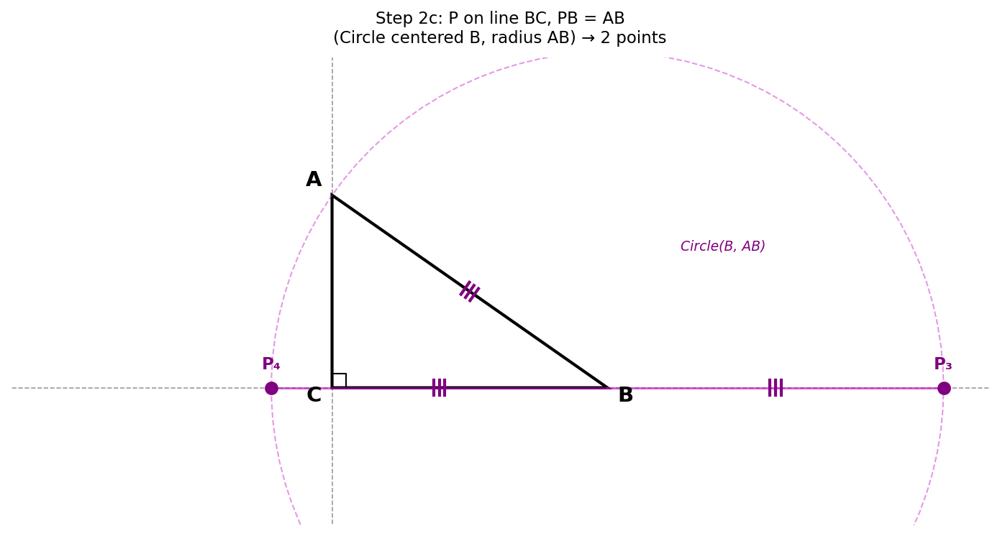
→ 2个点
✓ 情况③为什么是2个？因为B是圆心且在直线上，直线穿过圆心一定截得两个交点（即直径的两个端点方向）。
✗ 情况②中，如果忘记排除B点，会多数一个。P=B时PA≠PB且三点不成三角形。
? 为什么∠A≠30°？因为当∠A=30°时，情况①和情况②的点恰好重合（可以验证），导致只有3个点。
🔍 第四步：P在直线AC上
④ PA = PB（P在AB的垂直平分线上）
AB的垂直平分线与直线AC也不平行，所以有1个交点。
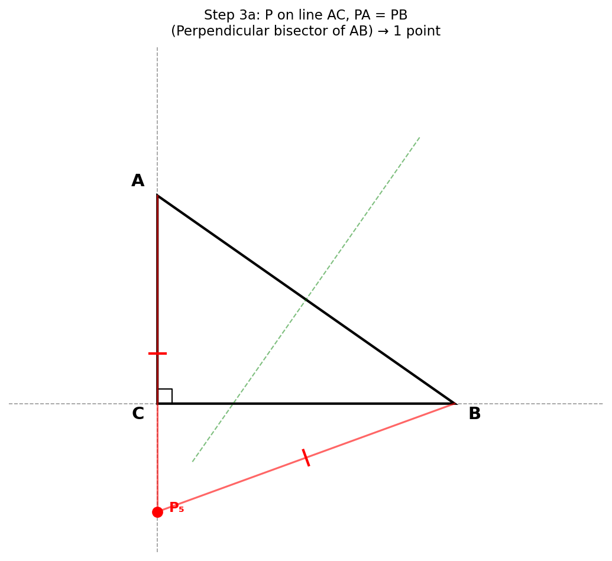
→ 1个点
⑤ PA = AB（A为圆心，AB为半径的圆）
圆心A在直线AC上，所以直线AC经过圆心，与圆有两个交点。
两个交点到A的距离都等于AB。由于B不在直线AC上，这两个点都不是B，也不是A（距A等于AB≠0），都有效。
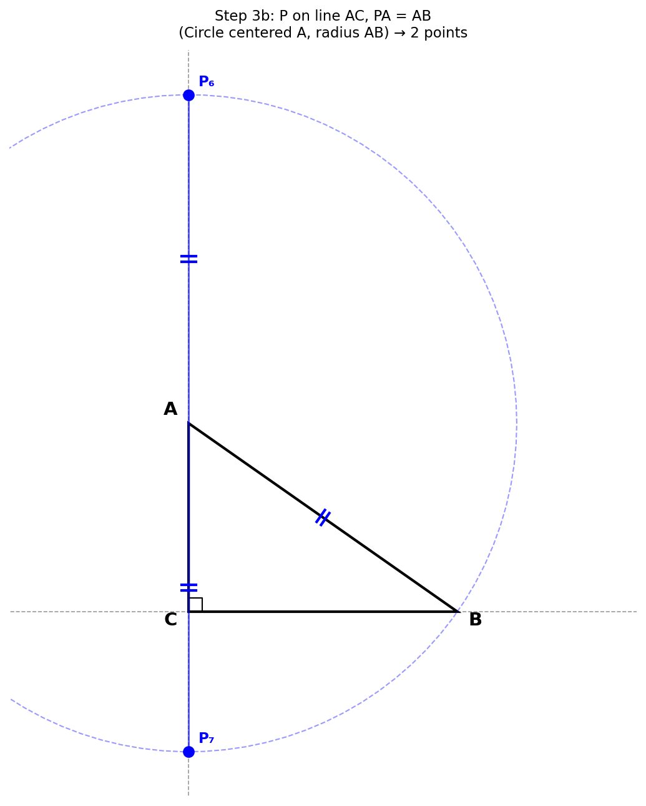
→ 2个点
⑥ PB = AB（B为圆心，AB为半径的圆）
圆过A点（因为BA=半径）。直线AC经过A，且B到直线AC的距离=BC < AB，所以圆与直线AC有两个交点。
其中一个交点是A本身（排除），另一个有效。
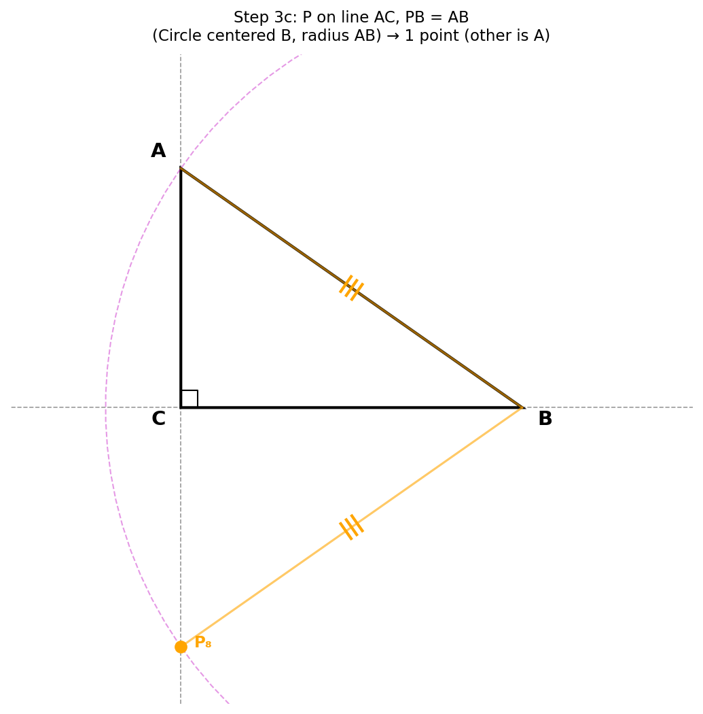
→ 1个点（扣除A点）
✓ 注意对比：在直线BC上是"PA=AB给1个，PB=AB给2个"，在直线AC上是"PA=AB给2个，PB=AB给1个"。原因是圆心在不在该直线上的区别。
? 关键规律：圆心在直线上 → 2个交点（直径方向）。圆心不在直线上但直线过圆上一点 → 2个交点中1个已知（需排除）→ 1个新点。
✗ 为什么∠A≠45°？当∠A=45°时，AC=BC，点C同时在两条直线上且满足PA=PB（因为CA=CB），产生重复计数。
✅ 第五步：检查无重复
两条直线BC和AC的交点是点C。需要确认C不是任何情况的解：
若 P = C：
PA = CA（不等于CB = PB，除非CA = CB即∠A = 45°，已排除）
PA = CA ≠ AB（因为CA < AB，直角三角形中斜边最长）
PB = CB ≠ AB（同理CB < AB）
结论：P = C 不满足任何等腰条件 ✓
由于∠A ≠ 30° 和 ∠A ≠ 45°，所有8个点互不重合。
特殊角度排除的原因：
- ∠A = 30°：直线BC上"PA=PB"的点与"PA=AB"的点重合 → 只有7个
- ∠A = 45°：P=C满足"PA=PB"（因为CA=CB），两条直线共享此点 → 只有7个
✓ 检查重复是分类讨论的最后一步。如果不检查，容易重复计数或者遗漏退化情况。
? 直线BC上的点形如(t, 0)，直线AC上的点形如(0, s)。它们只在原点C=(0,0)相交，而C不是解，所以不会有重复。
✗ 如果看到"∠A ≠ 30°, ∠A ≠ 45°"这些条件却不理解为什么要排除，说明对分类讨论的完整性还需加强理解。
🎯 总结
直线BC上 — PA=PB
1个
垂直平分线 ∩ 直线BC
直线BC上 — PA=AB
1个
圆(A,AB) ∩ 直线BC，排除B
直线BC上 — PB=AB
2个
圆(B,AB) ∩ 直线BC，B为圆心
直线AC上 — PA=PB
1个
垂直平分线 ∩ 直线AC
直线AC上 — PA=AB
2个
圆(A,AB) ∩ 直线AC，A为圆心
直线AC上 — PB=AB
1个
圆(B,AB) ∩ 直线AC，排除A
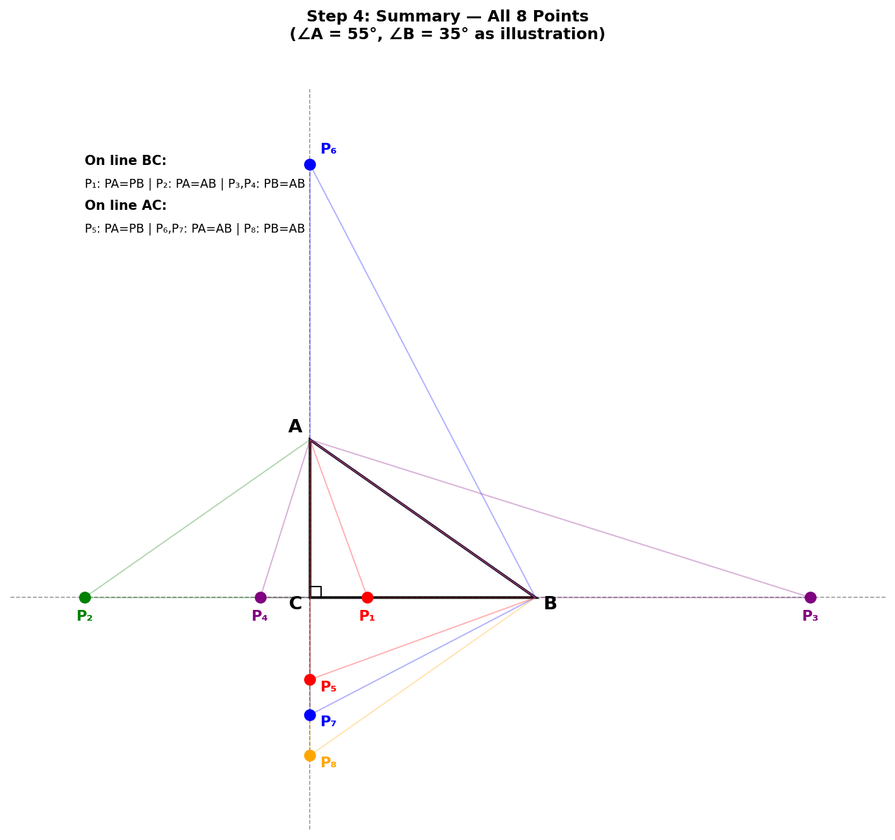
解题思路流程：
- 按等腰条件分三类：PA=PB、PA=AB、PB=AB
- 对两条直线分别讨论（共6个子问题）
- 利用"圆与直线位置关系"确定交点个数
- 排除使三角形退化的点（P=A或P=B）
- 检查两条直线之间无重复点
涉及知识点：
垂直平分线性质
圆与直线位置关系
等腰三角形判定
分类讨论
排除退化情况
解题技巧：
- 几何转化：将"两边相等"转化为"垂直平分线"或"圆"
- 快速判断交点数：圆心在直线上→2个交点；直线过圆上已知点→排除1个
- 注意直线 vs 线段：审题时注意"直线"包含延长线